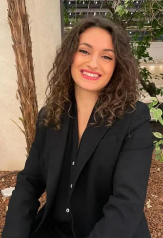

Tiffany

Je suis Tiffany, cheffe de projet influence !
Ma mission ? Donner vie à des projets pertinents en transformant des idées en réalité.
Gestionnaire aguerrie, je m’engage à orchestrer des campagnes captivantes, alliant créativité, stratégie et excellence opérationnelle. Prête à donner vie à vos initiatives avec passion et professionnalisme.
Pour moi, passer une journée à ne rien faire et à ne pas rire est une journée perdue !
Fun fact : J’adore l’autodérision ! Aussi, je détiens une note sur les rêves les plus fous que je fais, c’est assez cocasse. De plus, quand j’étais petite j’ai reproduis tous les sketch d’un gars une fille. La comédie a toujours fait partie de ma vie depuis toujours.